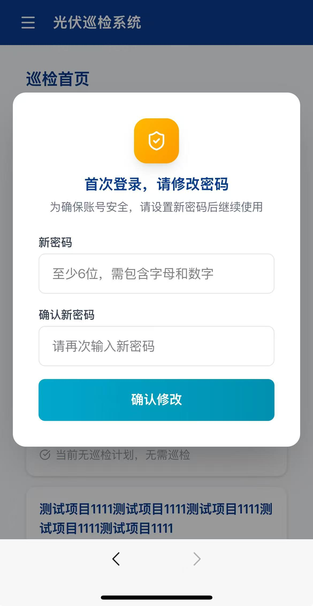
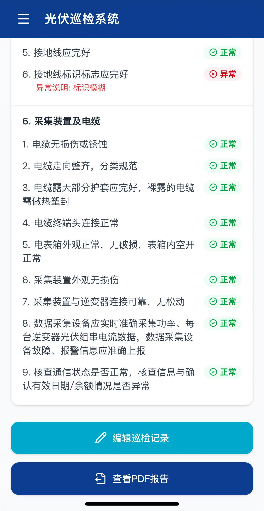
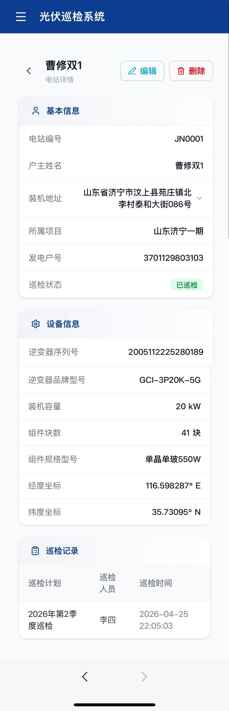
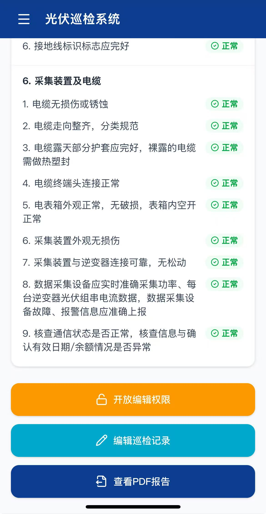

光伏巡检系统 UI/UE 原型图
一、通用交互规范
| 项目 | 说明 |
|---|
| 设计风格 | 简洁卡片式布局，圆角 12-16px，轻阴影 |
| 主色调 | 主色 Teal #0D9488，辅助色 Navy #0B3D91，背景 #F9FAFB |
| 响应式 | 移动端优先，PC 端左侧固定侧边栏 + 右侧内容区 |
| 导航模式 | 移动端：顶部栏 + 返回按钮；PC 端：顶部栏 + 左侧菜单 |
| 反馈方式 | 顶部 Toast 提示（成功/失败/警告），操作前弹确认框 |
二、巡检员端页面
P01 登录页
布局
- 居中卡片，深色渐变背景（Navy 系）
- 顶部图标 + 系统名称"光伏巡检系统"
- 表单：用户名输入框（带用户图标）、密码输入框（带锁图标 + 显示/隐藏切换）
- 底部"登录"按钮（Teal 渐变色，全宽圆角）
交互
- 输入用户名和密码后点击登录
- 登录失败显示 Toast 错误提示
- 登录成功后根据角色跳转相应页面
P02 强制改密遮罩 全局弹窗

图1-2 首次登录强制修改密码
布局
- 全屏半透明遮罩，居中白色卡片
- 顶部盾牌图标 + 标题"首次登录，请修改密码"
- 表单字段：新密码、确认新密码（无原密码字段）
- "确认修改"按钮
触发条件
P03 首页 — 项目列表
布局
- 顶部标题"巡检首页"
- 搜索栏（圆角输入框，带搜索图标）
- 项目卡片列表：项目名称（粗体）、项目地址（灰色）、电站数量 + 进行中计划标签
交互
- 点击卡片 → 进入该项目电站列表（P04）
- 下拉加载更多（无限滚动）
P04 电站列表
布局
- 顶部返回箭头 + 标题"电站列表" + 搜索栏
- 电站卡片：户主姓名（粗体）、底部信息行（电站编号 | 装机容量）、巡检状态标签（已巡检/未巡检）、编辑图标
交互
- 点击卡片 → 电站详情（P05）
- 点击编辑图标 → 巡检表单（P06）
P05 电站详情（只读）
布局
- 基本信息卡片：电站编号、户主姓名、装机地址、所属项目、发电户号、巡检状态
- 设备信息卡片：逆变器序列号、品牌型号、装机容量、组件块数、规格型号、经纬度
- 巡检记录卡片：表格展示历史记录（计划名称、巡检人员、巡检时间）
交互
- 点击巡检记录行 → 巡检记录详情（P07）
- 长地址支持展开/收起
P06 巡检表单
布局
- 巡检信息卡片（自动填充）：项目、电站、计划、编号、逆变器、装机容量
- 天气选择卡片：预设按钮（晴/多云/阴/小雨等）+ 自定义输入框
- 巡检事项区域：按大项分组可折叠，正常/异常切换按钮，异常说明文本框，实测值输入框
- 底部固定提交按钮："提交巡检"
交互
- 大项点击标题折叠/展开，完成后标题旁显示绿色勾
- 正常/异常按钮切换，异常时弹出说明输入框
- 提交前校验所有检查项必须填写
P07 巡检记录列表
布局
- 顶部标题"巡检记录" + 搜索栏 + 状态筛选（全部/进行中/已完成）
- 记录卡片：项目名称、电站户主、计划名称、巡检人、巡检时间、编辑图标
交互
- 点击卡片 → 记录详情（P08）
- 点击编辑图标 → 编辑巡检表单
- 下拉加载更多
P08 巡检记录详情

图1-10 巡检内容与照片
布局
- 基本信息卡片：巡检计划、项目名称、电站编号、户主姓名、巡检时间、巡检人、天气、GPS坐标
- 巡检内容卡片：按大项分组，正常/异常标签、异常说明、实测值、现场照片（3列网格）
- 底部按钮区：开放编辑权限 / 编辑巡检记录 / 查看PDF报告
交互
- 照片点击全屏预览，支持缩放
- 管理员可"开放编辑权限"（2天内所有人可以编辑）
- PDF 按钮下载并新窗口打开
P09 个人中心
布局
- 个人信息卡片：账号、姓名、电话、角色
- 账号设置卡片：修改密码、退出登录
- 关于卡片：版本号
三、管理员端页面
P10 项目列表
布局
- 页面标题"项目管理" + 右上角"新增项目"按钮
- 搜索栏 + 表格（项目名称、所属区域、电站数量、创建时间、操作）
交互
- 支持搜索、分页
- 点击项目名称 → 项目详情（P11）
P11 项目详情/编辑
布局
- 独立编辑页面，表单字段：项目名称、物业公司、电站类型、省市区选择
- 无人机证书、特种作业证（文件上传）
- 巡检内容配置（多选大项）、检测设备列表（可增删）
P12 电站列表
布局
- 返回箭头 + 项目名称 + "新增电站"按钮 + 搜索栏
- 表格列：电站编号、户主姓名、装机地址、装机容量、巡检状态、操作
- 底部分页器（PC 端页码，移动端无限滚动）
P13 电站详情

图2-5 电站详情（管理员）
布局
- 返回箭头 + 户主姓名 + 右上角编辑/删除按钮
- 基本信息卡片 + 设备信息卡片 + 巡检记录卡片
- 巡检记录表格可点击跳转详情
P14 巡检记录详情（管理员）

图2-6 记录基本信息

图2-7 巡检内容与操作
布局
- 基本信息卡片：巡检计划、项目名称、电站编号、户主姓名、巡检时间、巡检人、天气、GPS坐标
- 巡检内容卡片：按大项分组，正常/异常标签、异常说明、实测值、现场照片（3列网格）
- 底部按钮区：开放编辑权限 / 编辑巡检记录 / 查看PDF报告
交互
- 照片点击全屏预览，支持缩放
- 管理员可"开放编辑权限"（2天内所有人可以编辑）
- PDF 按钮下载并新窗口打开
P15 巡检计划列表
布局
- 页面标题"巡检计划" + "新增计划"按钮
- 表格列：计划名称、关联项目数、总电站数、已巡检/总数、状态、时间范围、操作
- 状态标签：进行中 绿色 / 已结束 灰色
P16 用户管理
布局
- 页面标题"用户管理" + "新增用户"按钮
- 表格列：账号、姓名、手机号、角色（管理员/巡检员标签）、状态、操作
- 操作：编辑、重置密码、删除
- 新增/编辑弹窗：账号、姓名、手机号、角色选择、密码
四、导航组件
N01 巡检员侧边栏菜单 移动端抽屉
布局
- 左滑抽屉式菜单
- 菜单项：巡检首页、巡检记录、个人中心
- 底部：退出登录按钮
N02 管理员侧边栏菜单 PC端固定 / 移动端抽屉
布局
- PC 端：左侧固定 Navy 色侧边栏，宽度 256px
- 移动端：左滑抽屉式菜单
- 菜单项：项目管理、巡检计划、巡检记录、用户管理
- 底部：退出登录按钮
五、核心业务流程
5.1 巡检员巡检流程
登录 → 首页项目列表 → 选择项目 → 电站列表 → 点击巡检按钮
→ 填写天气 → 逐项勾选正常/异常 + 填异常说明 + 拍照
→ 提交 → 返回电站列表（状态变为"已巡检"）
5.2 管理员管理流程
登录 → 项目管理（增删改查）
→ 电站管理（增删改查、查看巡检记录）
→ 巡检计划（创建计划、关联项目、结束计划）
→ 用户管理（增删改、重置密码）
5.3 巡检记录查看流程
电站详情 → 巡检记录列表 → 点击记录 → 记录详情
→ 查看检查项结果 + 照片 + 下载 PDF 报告